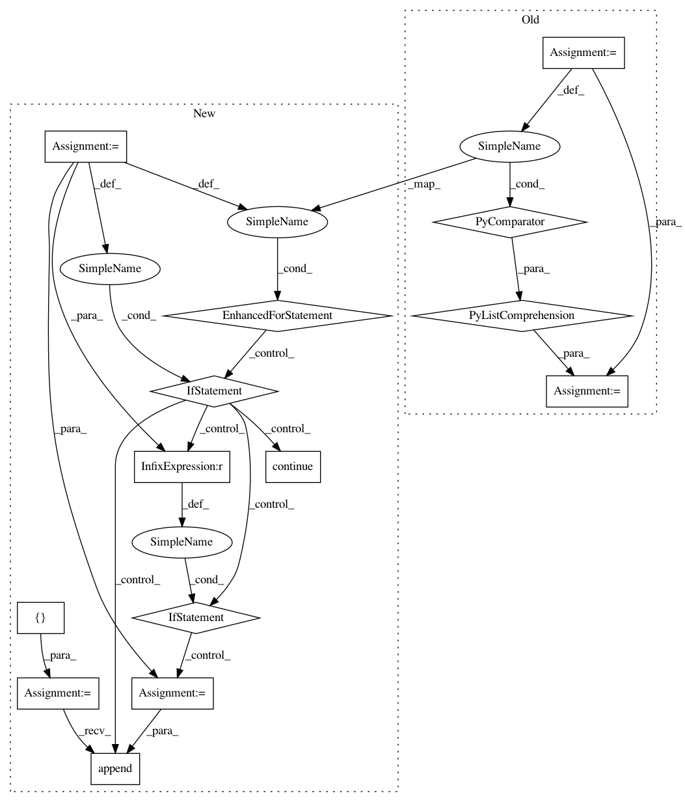

fe4eae13d231734fb9c14687cda1e3cd74d3f46f,brian2/core/network.py,SchedulingSummary,__init__,#SchedulingSummary#Any#,155
Before Change
field_names=["when", "order", "dt",
"name", "type", "active",
"owner_name", "owner_type"])
self.entries = [ScheduleEntry(when=obj.when, order=obj.order,
dt=obj.clock.dt, name=obj.name,
type=obj.__class__.__name__,
active=obj.active,
owner_name=obj.group.name,
owner_type=obj.group.__class__.__name__)
for obj in objects if not len(obj.contained_objects)]
self.all_dts = sorted({float(entry.dt) for entry in self.entries})
// How many steps compared to the fastest clock?
self.steps = {float(dt): int(dt / self.all_dts[0]) for dt in self.all_dts}
After Change
field_names=["when", "order", "dt",
"name", "type", "active",
"owner_name", "owner_type"])
entries = []
for obj in objects:
if len(obj.contained_objects):
continue
owner = getattr(obj, "group", None)
if owner is None:
owner_name, owner_type = None, None
else:
owner_name = owner.name
owner_type = owner.__class__.__name__
entries.append(ScheduleEntry(when=obj.when, order=obj.order,
dt=obj.clock.dt, name=obj.name,
type=obj.__class__.__name__,
active=obj.active,
owner_name=owner_name,
owner_type=owner_type))
self.entries = entries
self.all_dts = sorted({float(entry.dt) for entry in self.entries})
// How many steps compared to the fastest clock?
In pattern: SUPERPATTERN
Frequency: 3
Non-data size: 14
Instances
Project Name: brian-team/brian2
Commit Name: fe4eae13d231734fb9c14687cda1e3cd74d3f46f
Time: 2019-11-04
Author: marcel.stimberg@inserm.fr
File Name: brian2/core/network.py
Class Name: SchedulingSummary
Method Name: __init__
Project Name: samuelclay/NewsBlur
Commit Name: 2b08d13f6d4494681b80b9dd18909c7d123b558c
Time: 2013-10-08
Author: samuel@ofbrooklyn.com
File Name: utils/redis_raw_log_middleware.py
Class Name: RedisDumpMiddleware
Method Name: process_message
Project Name: samuelclay/NewsBlur
Commit Name: bcb1f66e380a5ff9b1e93d731fcd02704dadceaa
Time: 2013-11-22
Author: samuel@ofbrooklyn.com
File Name: utils/redis_raw_log_middleware.py
Class Name: RedisDumpMiddleware
Method Name: process_message